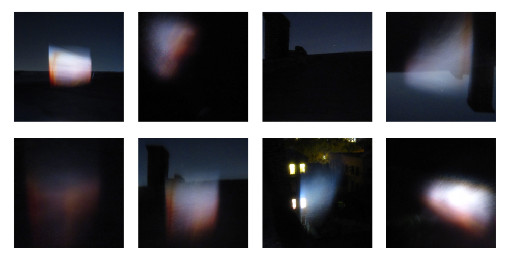
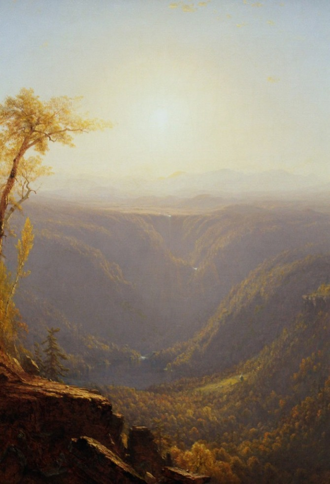

Fleeting Landscapes
2012
photography
Group project: Christie Leece, Yoonjo Choi
Feeting Landscapes is a reinterpretation of pristine nature inspired by an artwork called "A Gorge in the Mountains (1862)" by Sanford R. Gifford. Gifford was of the Hudson River School and he is described as an artist that didn't follow the artistic trend during his time. It was common to focus on a specific waterfall or mountain, but he had rather focused on the atmosphere and light in his paintings. Christie and I challenged to return his pristine moment back. We selected air and mist as our medium, as it represented the idea of pristine as a state that changes very quickly and easily. We projected the painting on the mist that was sprayed into the air and tried to capture that moment with the camera.
Below is the referenced artwork.
